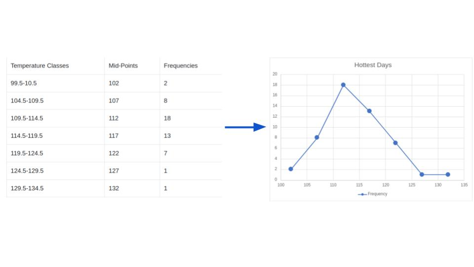

Frequency Polygon
The Frequency Polygon is a graph that displays the data by using lines that connect points plotted for the frequencies at the midpoints of the classes. The frequencies are represented by the heights of the points.
